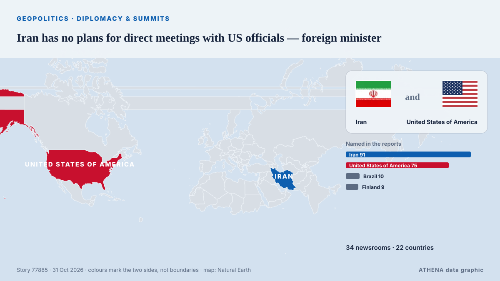

Iran has no plans for direct meetings with US officials — foreign minister

The American side’s attempt to open the door to dialogue and understanding more broadly is a positive step, Abbas Araghchi said. из TASS (English)
Независимые источники: 34 издания в 22 странах, с 28 окт.; первым сообщил The Korea Times; освещение идёт на спад. ATHENA оценивает риск как повышенный (5.2/10), прежде всего из-за тяжести описываемого ущерба и географического и отраслевого охвата. Уверенность — 91 % (высокая); подтверждают независимые источники: 34 издания, средняя надёжность источников — 76 %. СМИ по странам: Соединенные Штаты (10), Россия (6), Иран (5). Освещение: с 28 окт. по 31 окт., 87 ч.
Почему это важно: События в сфере безопасности и дипломатии могут менять союзы, торговлю и рынки далеко за пределами непосредственно затронутых стран.
Что изменилось: 39 новых сообщений от 29 редакций за 24 часа до 31 окт..
Первый заголовок: No more superpowers
Заголовки приводятся на английском языке, как они были опубликованы.
Коротко в цифрах
Отобрано, оценено и написано по опубликованной методологии ATHENA. Ни один редактор не вмешивается в отдельные события. Как это создаётся ›
| 28 Oct 00:12 UTC | 1 |
|---|---|
| 28 Oct 06:12 UTC | 0 |
| 28 Oct 12:12 UTC | 2 |
| 28 Oct 18:12 UTC | 2 |
| 29 Oct 00:12 UTC | 0 |
| 29 Oct 06:12 UTC | 0 |
| 29 Oct 12:12 UTC | 2 |
| 29 Oct 18:12 UTC | 2 |
| 30 Oct 00:12 UTC | 1 |
| 30 Oct 06:12 UTC | 3 |
| 30 Oct 12:12 UTC | 4 |
| 30 Oct 18:12 UTC | 4 |
| 31 Oct 00:12 UTC | 2 |
| 31 Oct 06:12 UTC | 0 |
| 31 Oct 12:12 UTC | 32 |
| 31 Oct 18:12 UTC | 1 |
| 31 Oct 15:17 UTC | 3.9 |
|---|---|
| 31 Oct 15:45 UTC | 5.8 |
| 31 Oct 18:51 UTC | 5.4 |
| 31 Oct 18:51 UTC | 5.2 |
Откуда эти цифры
Значимость
Риск
Уверенность
Освещение — кто сообщил и когда
заголовок в оригинале · открывает источник- The Korea Times · Республика КореяNo more superpowers
- Anadolu Agency (English) · ТурцияCanadian advocates, academics urge reassessment of refused study permits for Palestinian students from Gaza
- The Intercept · Соединенные ШтатыThe Incredible Shrinking Superpower
- IRNA (English) · ИранNew Iranian ambassador to Greece meets FM Araghchi ahead of mission
- Express Tribune · ПакистанIranian president says regional countries can ensure security without US involvement
- US State Department press releases · Соединенные ШтатыSecretary Rubio’s Meeting with Finnish Foreign Minister Valtonen
- US State Department press releases · Соединенные ШтатыSecretary of State Marco Rubio and Finnish Foreign Minister Elina Valtonen at a Memorandum of Understanding Signing Ceremony on a Critical Minerals Framework and a Technology Prosperity Deal
- The Hill · Соединенные ШтатыWashington state secretary of state fires back at DOJ over noncitizen voter claim: 'Profoundly disappointing'
- Middle East Eye · INTIran's Qalibaf says progress only possible when Tehran's seven conditions are met
- Mehr News (English) · ИранNo progress without accepting Iran’s seven conditions
- The Korea Times · Республика КореяSeoul expects progress on OPCON transfer at early 2027 defense talks with US
- The Rio Times · БразилияBrazil’s Vieira Expected at Atlanta G20
- The Korea Times · Республика КореяSeoul expects substantive progress on OPCON transfer at early 2027 defense talks with US
- Arab News · Саудовская АравияSaudi FM takes part in G20 foreign ministers meeting in Atlanta
- TASS (English) · РоссияLavrov seated between Mexican, Saudi foreign ministers at G20 meeting in Atlanta
- Arab News · Саудовская АравияSemipalatinsk nuclear treaty must be extended to include Iran, the Gulf and wider Middle East
- US State Department press releases · Соединенные ШтатыSecretary of State Marco Rubio at a Plenary Session on Geopolitical Issues
- TASS (English) · РоссияLavrov, top Japanese diplomat hold talks on sidelines of G20 meeting in Atlanta
- Ukrainska Pravda (English) · УкраинаPolish foreign minister says he has a message for Lavrov at G20 meeting
- US State Department press releases · Соединенные ШтатыSecretary Rubio’s Meeting with Turkish Foreign Minister Fidan
- US State Department press releases · Соединенные ШтатыSecretary of State Marco Rubio at the G20 Foreign Ministers’ Meeting Welcome Reception
- The Hindu · ИндияJaishankar, Anita Anand agree that Modi’s Canada visit in December will be ‘another building block’
- Mehr News (English) · ИранIran slams German chancellor for backing US-Israel aggression
- The Hill · Соединенные ШтатыLive updates: Trump telerallies planned in 19 states; Atlanta G20 meeting continues after early tensions
- Mehr News (English) · ИранIran has no plan to meet US officials: FM
- TASS (English) · РоссияIran agrees to reopen Strait of Hormuz within two days if deal reached with US
- APA (English) · АзербайджанNew proposal shortens implementation of Iran’s plan to open Hormuz to 2 days: Araghchi
- The Jerusalem Post · ИзраильAraghchi says Vance's letter 'positive step' toward opening dialogue between Iran, US
- Al Jazeera English · КатарIran FM says US outreach a ‘positive step’ as delegation in Qatar for talks
- TASS (English) · РоссияIran demands reduction in US forces in region as condition for settlement — top diplomat
- APA (English) · АзербайджанIran does not rule out an outbreak of war: Araghchi
- TASS (English) · РоссияIran has no plans for direct meetings with US officials — foreign minister
- TASS (English) · РоссияIran remains committed to Nuclear Non-Proliferation Treaty — foreign minister
- Free Malaysia Today · МалайзияIran has no plans for talks with US, says foreign minister
- Vanguard · НигерияIran has no plans for talks with US — Foreign minister
- Courthouse News · Соединенные ШтатыG20 foreign ministers in Atlanta meeting head to an ending without consensus on key issues
- PBS NewsHour · Соединенные ШтатыG20 foreign ministers end Atlanta meeting without consensus on key issues
- Business Recorder · ПакистанIran has no plans for talks with US: foreign minister
- IRNA (English) · ИранUS offer to open dialogue a 'positive step', but no plans to meet Americans at present: Araghchi
- AzerNews · АзербайджанUS officials may join Iran's team for talks in Doha